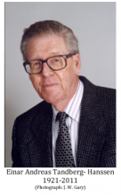

Please note: the AAS Obituaries are temporarily being hosted on this website while their full content is being ingested into the PubPub publishing platform newly adopted by the Bulletin of the American Astronomical Society. When the migration is complete, your existing links will take you to the final, migrated content. Contact peter.williams@aas.org with any questions.
Einar A. Tandberg-Hanssen (1921-2011)
Dr. Einar Andreas Tandberg-Hanssen was born on 6 August 1921, in Bergen, Norway, and died on July 22, 2011, in Huntsville, AL, USA, due to complications from ALS (Amyotrophic lateral sclerosis, often referred to as Lou Gehrig’s disease).
His parents were administrator Birger Tandberg-Hanssen (1883-1951) and secretary Antonie “Mona” Meier (1895-1967).
He married Erna Rønning (27 October 1921 - 22 November 1994), a nurse, on 22 June 1951. She was the daughter of Captain Einar Rønning (1890-1969) and Borghild Lyshaug (1897-1980).
Einar and Erna had two daughters, Else Biesman (and husband Allen of Rapid City, SD, USA) and Karin Brock (and husband Mike of Gulf Shores, AL, USA). At the time of his death Einar had eight grandchildren and eight great-grandchildren.
Dr. Tandberg-Hanssen was an internationally-known member of the solar physics community, with over a hundred published scientific papers and several books, including Solar Activity (1967), Solar Prominences (1974), The Physics of Solar Flares (1988) and The Nature of Solar Prominences (1995).
Einar grew up in Langesund and Skien, Norway, where he took the qualifying exams at Skien High School in 1941. After the war he studied natural sciences at the University of Oslo and received his undergraduate degree in astronomy in 1950.
He worked as a research assistant in the Institute of Theoretical Astrophysics at the University of Oslo for three intervals in the 1950s, interspersed by fellowships at the Institut d'Astrophysique in Paris, Caltech in Pasadena, CA, the High Altitude Observatory in Boulder, CO, and the Cavendish Laboratory in the UK (at the invitation of British radio-astronomer Sir Martin Ryle). He earned a doctorate in astrophysics at the University in Oslo in 1960 with a dissertation titled “An Investigation of the Temperature Conditions in Prominences with a Special Study of the Excitation of Helium.”
From 1959-61, Tandberg-Hanssen was a professor at the University in Oslo. He then traveled back to the High Altitude Observatory in Boulder, Colorado, where he was employed until 1974. He was then employed at the Space Science Laboratory at NASA's Marshall Space Flight Center (MSFC) in Huntsville, Alabama. There, he was a Senior Research Scientist and later Deputy Director of the Laboratory. He served as Lab Director from 1987 until his retirement from NASA in 1993. He promptly took a part-time post within the Center for Space Plasma and Aeronomic Research at The University of Alabama in Huntsville, where he worked until his death.
During his tenure at NASA, he, along with Dr. Mona Hagyard and Dr. S. T. Wu, built up a substantial, internationally-based group of solar physicists at MSFC and UA Huntsville. He was a lead investigator on two instruments aboard NASA spacecraft: the S-056 X-Ray Event Analyzer on the Skylab Apollo Telescope Mount (which provided pioneering, high-time-cadence temperature and density information on solar X-ray-emitting regions) and the Ultraviolet Spectrometer and Polarimeter on the Solar Maximum Mission (which carried out sweeping new studies of EUV emission from solar active regions and flares). Dr. Tandberg-Hanssen’s books about various aspects of solar activity, viz. Solar Activity (Blaisdell, 1967), Solar Prominences (Reidel, 1974), The Physics of Solar Flares (with A. G. Emslie) (Cambridge, 1988), and The Nature of Solar Prominences (Reidel, 1995), have become international standard works within the discipline of solar physics.
In 1982, Dr. Tandberg-Hanssen was elected to membership in the Norwegian Academy of Science and Letters. From 1979-82 and 1982-85, respectively, he served as vice-president and president of Commission 10 of the International Astronomical Union (IAU). He served as president of the Federation of Astronomical and Geophysical Data Analysis Services from 1990-1994. He has received the NASA Exceptional Service Medal. He was also a long time editor of the journal Solar Physics.
Dr. Tandberg-Hanssen’s Solar Physics Memoir paper, entitled Solar Prominences - An Intriguing Phenomenon http://www.springerlink.com/content/1166j74k577kv332/ was published shortly before his death. The article starts with an autobiographical account, where the author relates how his several study-trips abroad gradually led him to the study of solar physics in general, and prominences particularly.
Einar's residence as a research fellow at the Institut d'Astrophysique in Paris in the 1950s laid the foundation for a lifelong interest in France and French culture. His great interest in and knowledge of French mediaeval churches, as well as the Norwegian stave churches, is reflected in two books, Letters to My Daughters (Ivy House Pub. Group, 2004), and The Joy of Travel: More Letters to My Daughters (Pentland Press, 2007), which serve as a review, tourist guide and history book, shaped in the form of letters home to his two daughters, from his many travels in Norway and France.
Einar was a true gentleman and a true scholar. As evidenced by his papers, his books, and his dealings with others, he was always seeking not only to expand his own knowledge and understanding, but also to find new ways of communicating his remarkable insight to others. He is survived by his daughters, Else and Karin, and their families.
Obituary written by: G. Allen Gary (The University of Alabama in Huntsvile/CSPAR), A. Gordon Emslie (Western Kentucky University, Bowling Green, KY), David H. Hathaway (NASA/MSFC, Huntsville, AL), Ronald Moore (NASA/MSFC, Huntsville, AL)
BAAS Citation: BAAS, 2011, 43, 032
SAO/NASA ADS Bibcode: 2011BAAS...43..032G